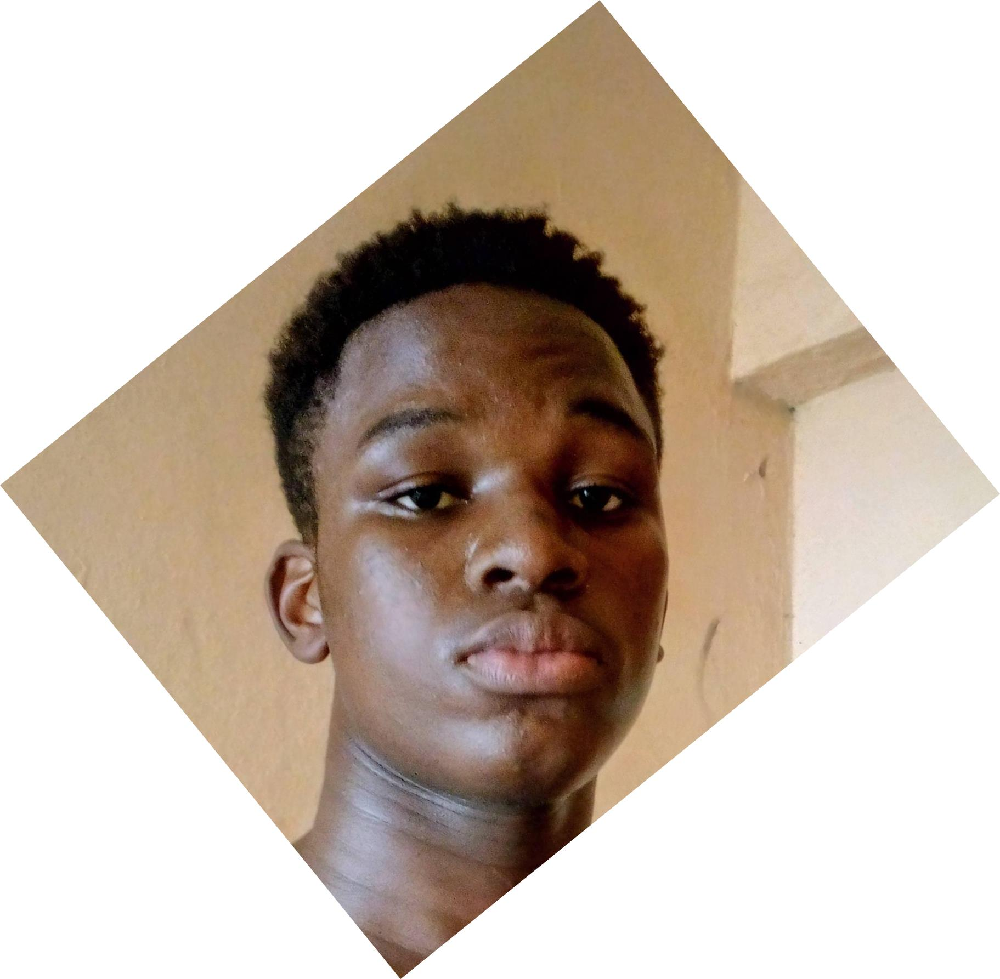

OGBE SOMTOCHUKWU BENEDICT
A DEVELOPER

Objectives:
To be one of the first Nigerians to own a globally patronized software
Background:
Nusery:Divine Love Nusery and Primary School(2006-2012)
Primary:
Divine Love Nusery and Primary School(2012-2013)
Little Flower Academy(2013-2015)
Solid Base Private School(2014-2015)
Secoundary:
Marist Comprehensive Academy(2015-2019)
Corner Stone Secoundary School(2019-2020)
Tertiary:Godfrey Okoye University(2020-Till date)
Skill Set:
I am web developer with the knowledge of HTML, CSS, Python, Bootstrap, Django and a basic knowledge of Javascript
I have a good knowledge of Forex Trading
I play Musical Instruments like Piano and Trumpet
I play Volleyball and Table tennis
I am a graphics designer
Prospective Projects:
A social media that would have alot of users
A Popular shopping site like Jumia
Building a Savings App like piggy vest